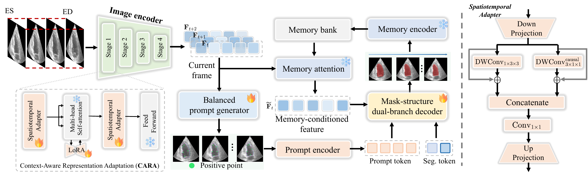
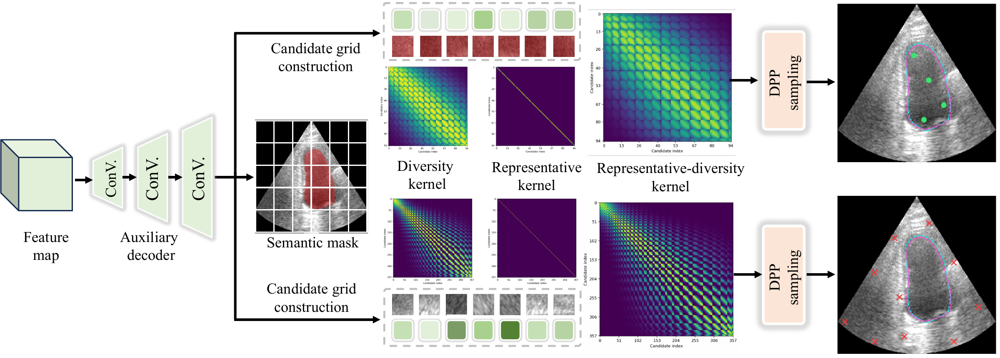
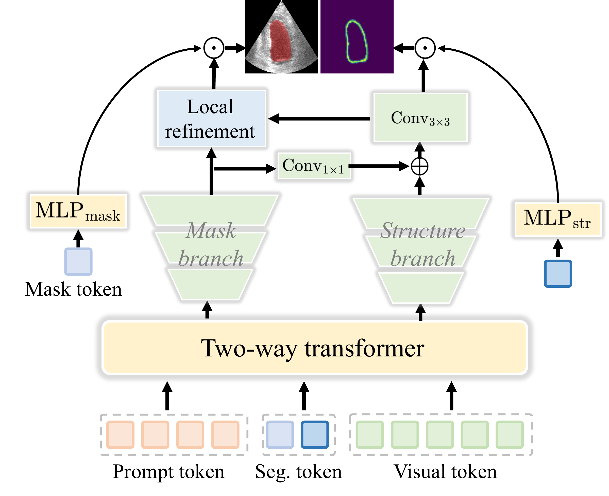
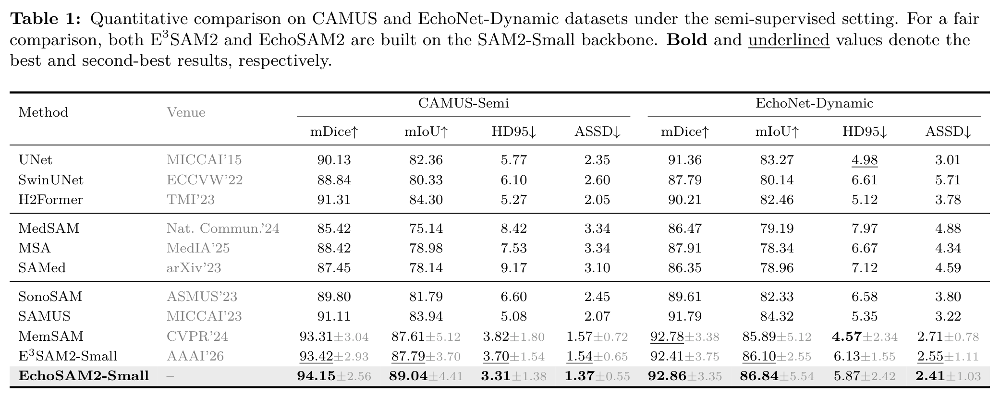
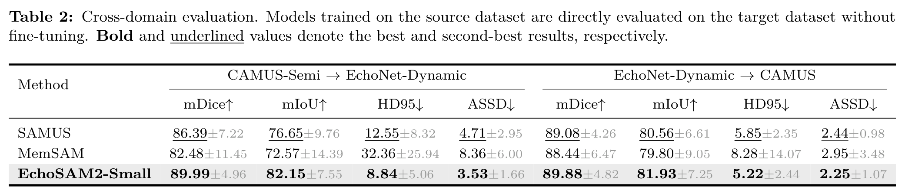
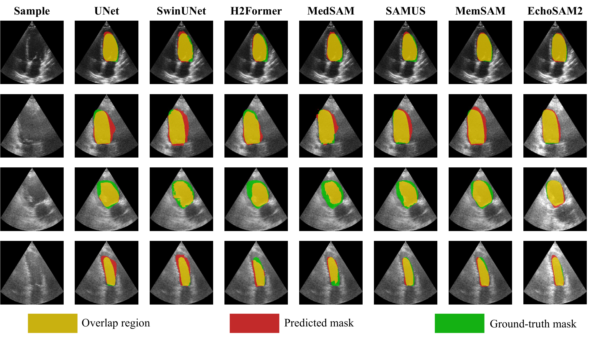
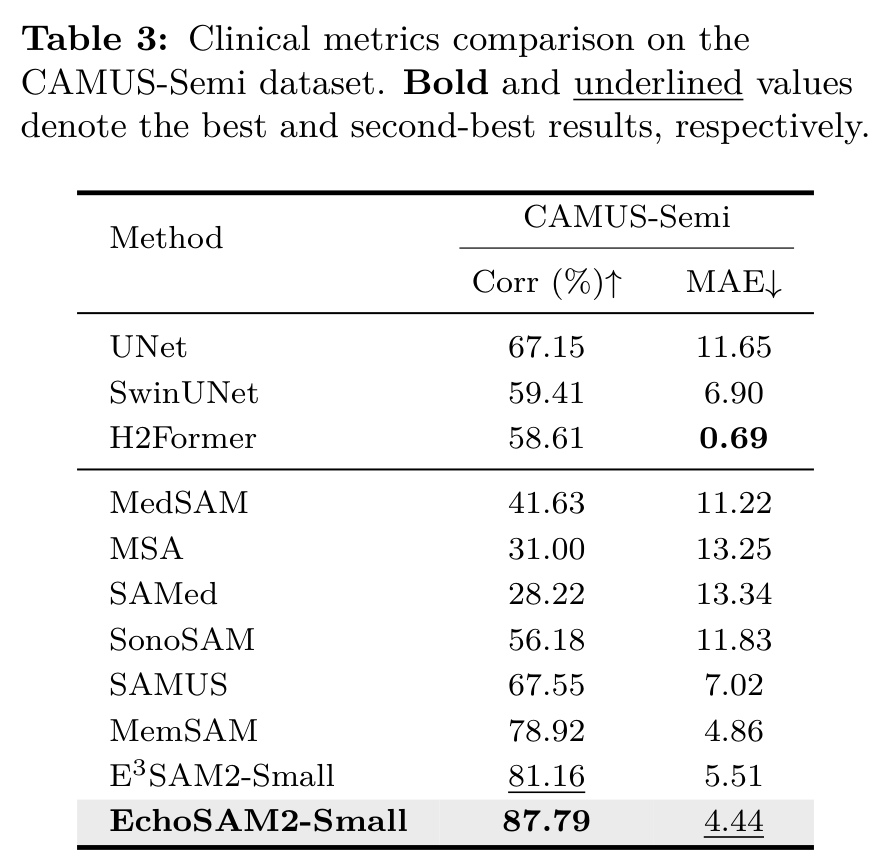
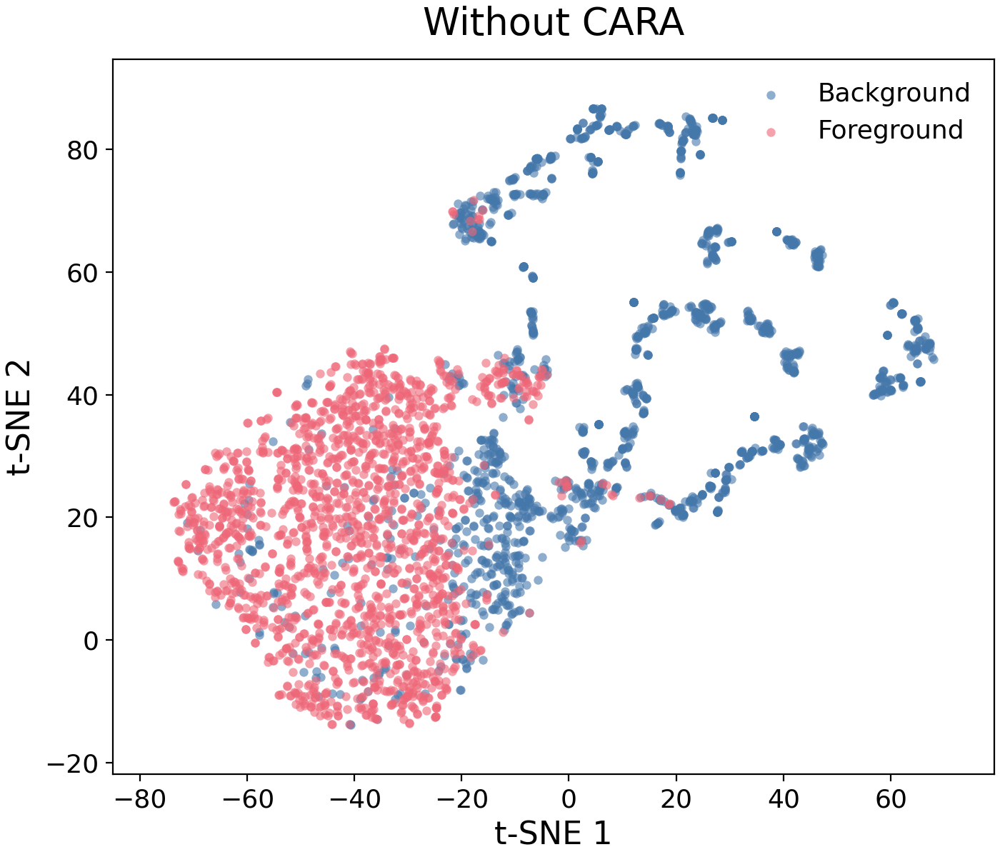
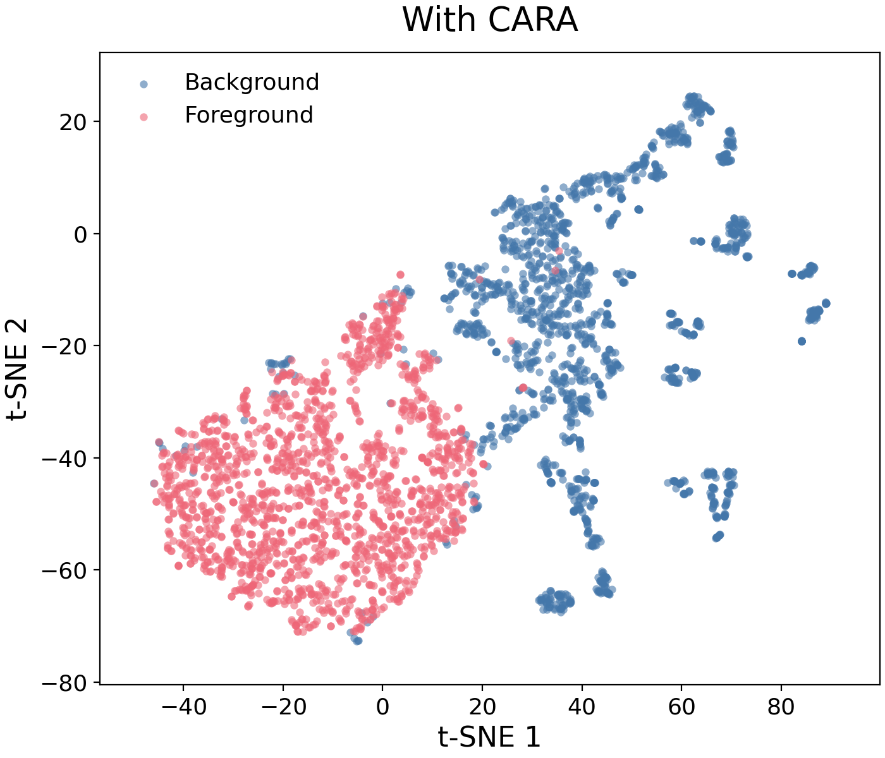

Abstract
Accurate left ventricular segmentation in echocardiography videos supports quantitative cardiac assessment, but dense video annotation is labor-intensive. We introduce EchoSAM2, a framework that optimizes point prompts while adapting SAM2 representations using annotations from only the end-diastolic and end-systolic frames. Context-aware representation adaptation captures ventricular spatiotemporal information and long-range context, complemented by boundary-sensitive local refinement during decoding. Meanwhile, a representativeness–diversity balancing prompt generator automatically selects complementary positive and negative points to provide spatial guidance. Experiments on CAMUS and EchoNet-Dynamic demonstrate the effectiveness of this collaborative design in both in-domain segmentation and cross-domain evaluation.
Method
EchoSAM2 combines complementary representation adaptation with automatic point prompt optimization. The framework consists of three components.
Context-Aware Representation Adaptation (CARA)
Spatiotemporal adapters and low-rank adaptation incorporate local ventricular morphology, cross-frame context, and long-range modeling into the visual encoder.

Representativeness–Diversity Balancing Prompt Generator (BPG)
Foreground and background candidates are evaluated through within-class feature affinity and inter-region correlations. DPP-based selection provides representative and diverse positive and negative point prompts.

Boundary-Sensitive Local Refinement (BLR)
A structure branch explicitly predicts ventricular boundaries, while structure features are incorporated into the mask branch to refine local representations.

Comparison with State-of-the-Art Methods
Quantitative Results


Qualitative Results

Clinical Evaluation
On CAMUS-Semi, segmentation-derived LVEF estimates achieve a Pearson correlation of 87.79% and an MAE of 4.44 percentage points.

Visualization of Balanced Point Prompts
BPG combines representative target coverage with diverse spatial guidance. The sequences below visualize positive and negative point prompts across video frames.
Effectiveness of Representation Adaptation
CARA improves the separation of ventricular foreground and background features in the displayed t-SNE embeddings.

